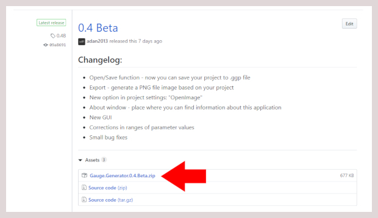
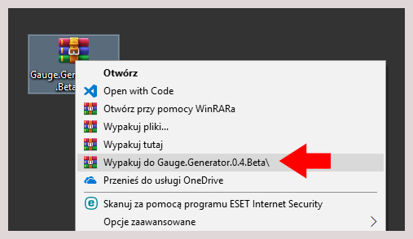

Welcome to Gauge Generator
Gauge Generator it's a free application allowing generating different types of analog clock face. This is a full online documentation containing tips and examples of projects. Select the next page from menu on the left side of this website.
Instalation
- Go to releases page in GitHub
- Download ZIP file of the newest version
 - Unzip downloaded file by using an application such as WinRAR or 7-Zip
 - Run the file with the
.exeextension